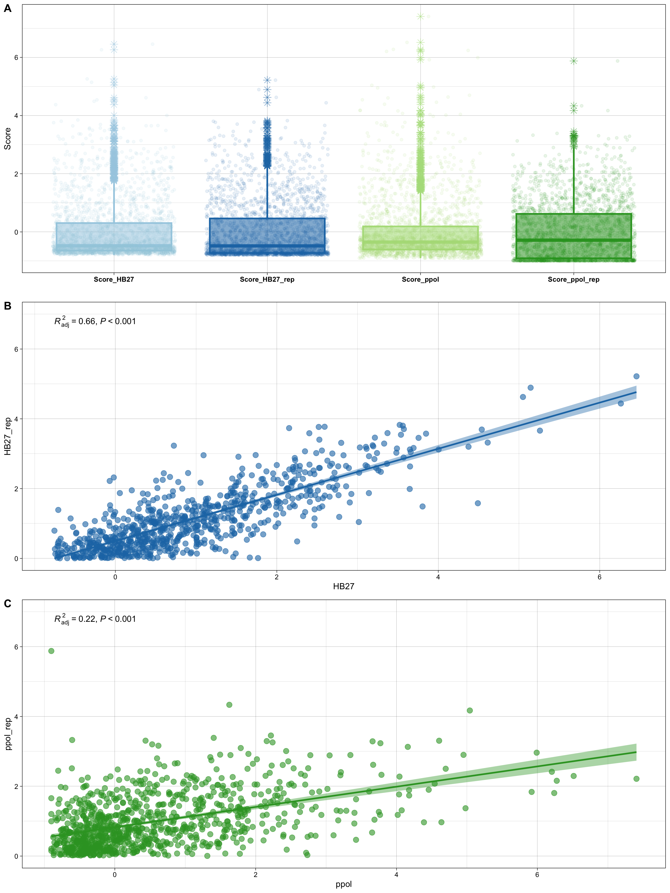
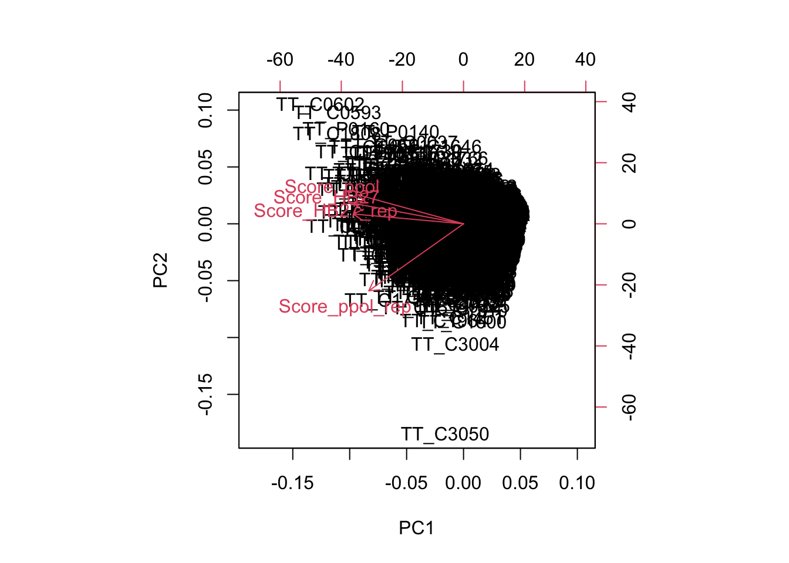

Quality check, reads filtering and trimming was carried out with FastP 0.23.4Chen et al. (2018) and reports were merged with MultiQC 1.17. Reads processing parameters were optimized to maximal proportion of mapped reads against the reference HB27 assembly GCA_000008125.
Warning in read.table("00_fastp/merged_fastp_reports.csv", header = TRUE, :
incomplete final line found by readTableHeader on
'00_fastp/merged_fastp_reports.csv'
Table 1. Statistics of fastp processed reads of HB27 TnSeq libraries
Sample
File
% Duplication
Final reads (M)
Final reads (%)
GC %
ppol_Mother
TNB-01_S1_L001_R1_001
78.20%
0.9
41.40%
59.40%
wt_Daughter
TNB-03_S3_L001_R1_001
72.40%
2.7
83.90%
65.40%
ppol_Mother_replicate
TNB-07_S3_L001_R1_001
74.20%
1.3
88.30%
65.80%
wt_Daughter_replicate
TNB-09_S5_L001_R1_001
78.60%
1.7
92.10%
64.90%
The original sample looks different, with less reads and length, as well as slight lower GC content. Note that HB27 chromosome has 1.894.877 bp and 69.5% GC and pTT27 has 232.605 and 69% GC.
Given that several samples were sequenced in the same batch, downplaying a technical problem with sequencing library o running, we hypothesize that some transposon insertions were unstable.
Interestingly, some studies show that plasmid and intergenic/non-coding sequences has lower GC content Hu et al. (2022). Thus, we will analyze the ratio chromosome/plasmid, gene/intergenic and CG bias in all the samples (see below).
Figure 1. TnSeq libraries mapping statistics. (A) Total number of mapped reads (bars, left axis) and overall alignment rate (points, right axis). (B) Reference sequence depth (diamonds, left axis) and coverage (round points, right axis). Samples corresponding to ppol and wt HB27 strains are colored in blues and greens, respectively.
Mapping profile in HB27 genome
Again, the sample TNB01 corresponding to ppol (Mother) is clearly different, with less reads and lower mapping rate. Let’s look in more detail the mapping per base pair, analyzed with Bedtools 2.30.0.
Figure 2. Per nucleotide absolute coverage of the filtered reads in each sample (log2 scale). Only 1M randomly-sampled positions per sample are shown.
The above plots are sampled to a max of 106 points, full plots are in the folder bamdash and can be accessed with the following links, as interactive plots and SVG images.
The two replicates have a smaller range than the primary samples (mother and daughter), but we can still recognize two regions with a very high frequency of insertions in the reverse strand, located at positions 576,160 and 1,457,335 of the chromosome and almost overlapping in the four samples. These regions are not very clear in logarithmically scaled plots, but they caught our attention when we analyzed linearly scaled plots.
We have now decided to investigate these regions in more detail. The first hotspot corresponds to gene TT_C0593 (Figure 3), which encodes a 5-carboxymethyl-2-hydroxymuconate semialdehyde dehydrogenase, an oxidoreductase involved in tyrosine metabolism that may be dispensable in rich media. This target region corresponds to a GC track, the preferred sequence for Tn5 Green et al. (2012). However, as the coverage indicates multiple nearby integration sites, the high integration rate within TT_C0593 may indicate that this gene is not required rather than a transposase artifact.
Figure 3. TnSeq insertion hotspot (A) Detailed coverage (linear scale) in the region 570000-580000 of HB27 chromosome. (B) Annotated features in the detailed region. The vertical dashed line indicated the position of the highest coverage.
The second and more important hotspot (Figure 4) is located in an intergenic region between locus TT_C1532 (glucosamine-fructose-6-phosphate aminotransferase) and TT_C1533 (S-layer protein). The sequence in this site appears to be more diverse but also contains GC traces. However, since we will normalize the counts per gene based on the mapped reads in the coding regions (see below), this promiscuous site will not affect our analysis.
Figure 4. TnSeq insertion hotspot (A) Detailed coverage in the region 1445000-1458000 of HB27 chromosome. (B) Annotated features in the detailed region. The vertical dashed line indicated the position of the highest coverage.
Figure 5. Coverage per nucleotide in each of the TnSeq libraries. For simplicity, total coverage in forward and reverse strands was merged. Gene coordinates are indicated in each plot. The dashed blue lines mark the 80% central gene interval considered for score calculation.
Figure 5. Coverage per nucleotide in each of the TnSeq libraries. For simplicity, total coverage in forward and reverse strands was merged. Gene coordinates are indicated in each plot. The dashed blue lines mark the 80% central gene interval considered for score calculation.
Integration score per gene
Integration events counts and score
Now we are going to transform the mapped reads into hits per gene, to obtain a normalized insertion score, by the following steps:
We only consider insertions within the middle 80% regions of genes, because insertions landing in the flanking sections of genes might give rise to truncated of chimeric proteins partially functional. The counts of Tn insertions will be obtained with FeatureCounts , implemented in the R package Rsubread.
We will normalize by the total number of mapped reads within the coding regions (80% central).
We will obtain a ratio of observed to expected Tn insertions.
We will make a log2-transformation in pseudocounts ($$log_2(x+1)) to avoid negative scores.
All in all, our score will be obtained with the following formula:
Additionally, to minimize the inter-experiments differences, the final standard scores (Z-score) were centered and scaled using the R function scale().
In the following plots you can see the distribution of scores between samples.
Warning: Removed 1484 rows containing non-finite outside the scale range
(`stat_poly_line()`).
Warning: Removed 1484 rows containing non-finite outside the scale range
(`stat_poly_eq()`).
Warning: Removed 1484 rows containing missing values or values outside the scale range
(`geom_point()`).
Warning: Removed 1329 rows containing non-finite outside the scale range
(`stat_poly_line()`).
Warning: Removed 1329 rows containing non-finite outside the scale range
(`stat_poly_eq()`).
Warning: Removed 1329 rows containing missing values or values outside the scale range
(`geom_point()`).

Figure 6. Tn insertion scores per gene. (A) Boxplot of gene scores per sample. (B) Correlation of scores per gene and sample.
As we can see, the correlation between both PPOL samples is only moderate, in agreement with a clear difference in the original sample. This can be also seen in the PCA plot below, in which the Ppolrep (TNB09) sample contains around 20% variability.
Show the code
tnseq.pca <-prcomp(tnseq[,c(4,7,10,13)], center =TRUE, scale. =TRUE) biplot(tnseq.pca)

Figure 7. Samples PCA plot.
Should we rule out the ppolmother replicate sample?
This sample contains 20% of the total data variance. Therefore, it will hinder the analysis of gene essentiality and probably lead to false negative results. However, we decided to keep it as its inherent divergence will also strengthen our results.
In order to analyze in detail the difference between samples, we construct also an interactive plot. Put your mouse pointer over any point and you will see the Score and the Gene.
Warning: A numeric `legend.position` argument in `theme()` was deprecated in ggplot2
3.5.0.
ℹ Please use the `legend.position.inside` argument of `theme()` instead.
Show the code
ggplotly(dis)
Figure 8. Comparison of Tn insertion Z-scores per gene. Values were sorted by the average of all samples.
Green, Brian, Christiane Bouchier, Cécile Fairhead, Nancy L. Craig, and Brendan P. Cormack. 2012. “Insertion Site Preference of Mu, Tn5, and Tn7 Transposons.”Mobile DNA 3 (1): 3. https://doi.org/10.1186/1759-8753-3-3.
Hu, En-Ze, Xin-Ran Lan, Zhi-Ling Liu, Jie Gao, and Deng-Ke Niu. 2022. “A Positive Correlation Between GC Content and Growth Temperature in Prokaryotes.”BMC Genomics 23 (February): 110. https://doi.org/10.1186/s12864-022-08353-7.